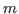
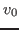

Many scientific applications require solving large sparse or dense eigenvalue problems. We can cite, as a non-exhaustive list, the reactor physics, material science, life science, finance or indexing of large data volume.
During the last decades, Krylov methods were widely used as they are well suited to actual eigenvalue problems, wether it concerns the dominant or a susbset of eigenpairs. Due to their success, many research have been carried out to considerably improve the Krylov methods.
In this paper, we propose to focus on the Explicitly Restarted Arnoldi Method (ERAM), a Krylov eigensolver for non-hermitian matrices. The ERAM is numerically robust and others some good properties for parallel execution. However, the ERAM numerical quality, and especially convergence behavior, strongly depends on the Krylov subspace size (that we will denote by

) and the initial guest (that we will denote by
). But, finding an optimal pair for and depends on the matrix (size, structure, spectrum ) and the desired eigenpairs. One way to other the best couple ( ; ) is to adapt dynamically these parameters at run-time using auto/smart-tuning techniques.Regarding the parameter , there exists many auto/smart-tunings to dynamically adapt the subspace size. We assume that a large subspace size will produce more accurate results. However, a growing subspace size implies additional operations and mostly additional global communications. Such communications rapidly become bottleneck operations, especially for the ERAM with large matrices in the context of massive parallel computations. Fixing the right Krylov subspace size is equilibrium between the numerical and computational performances.
Regarding the second parameter , there is no general method to compute it at each restart. Traditionally, is a linear combination of approximated desired eigenvectors, uniformly weighted. In this paper, we present several restarting strategies and compare their efficiency. Testing them on many matrices, the restarting strategy may improve the convergence of more than 50 restarts compared to the uniform weight scheme. However, there is neither rules/tools nor correlation to predict which restarting strategy will be the most efficient, as it depends dynamic parameters. We aim to dynamically adapt the best restarting strategy with respect to these parameters. As a comparison with subspace size auto-tunings, changing a restarting strategy is computationally costless, as we reuse computed data. Dynamically replace a restarting strategy by another one imply neither new operations nor communications at all. This is why a smart-tuning on restarting strategy presents a real benefit as it maximizes the ratio computational cost and numerical efficiency. In this paper, we present our work to establish such smart-tuning algorithm, and the first tools that will lead to it.
The first step to build such smart-tuning on restarting strategies is to evaluate the ERAM convergence. The Krylov methods applied to linear systems resolution benefit from mathematical background to evaluate the solver convergence.
Regarding the ERAM solver, there is neither such theory nor existing methods to evaluate its convergence. In this paper, we propose an algorithm that measure the ERAM convergence and fix whether it diverges, stagnates or converges. In case of divergence or stagnation, we will change the restarting strategy in order to ameliorate the convergence and avoid as much as possible the divergence behavior. We will then conclude on the ongoing work to ameliorate this convergence algorithm.
In this paper, we will first introduce with details the existing and new restarting strategies. We will then present results on restarting strategies and emphasize their convergence behavior. Based on the generated results, we apply our convergence algorithm for each restarting strategy. According to the convergence algorithm, we will replace the restarting strategy by another one and present the results. We will conclude on the results and develop many features for the smart-tuning on restarting strategies.